Aujourd’hui, nous allons nous intéresser à une interrogation qui revient très souvent lorsqu’on aborde la question de l’écoconception web ou de la sobriété numérique : un site écoconçu est-il nécessairement moche ? Souvent, la demande consiste plutôt à obtenir un échantillon de “sites jolis et écoconçus” (de préférence avec une finalité proche de celle du projet en cours). Les spécialistes de l’accessibilité web reconnaîtront sans doute ce type d’interrogation pour y avoir été eux aussi régulièrement confrontés. Il n’est déjà pas évident de définir ce que serait, dans l’absolu, un site “joli”. La notion est elle-même très subjective.
Accès rapides
Classement des sites sobres
Méthodologie
Analyse du classement
Conclusion
Nous procéderons donc autrement. Nous constituerons d’abord une liste de sites a priori sobres. Il y a pour cela des listes et des annuaires qu’on listera plus loin. Une fois la liste constituée, nous ferons une première analyse rapide pour en exclure les sites qui ne sont pas aussi sobres qu’annoncé (trop de données transférées, trop de requêtes, etc.). Ensuite, nous utiliserons l’outil Greenspector afin de les départager (en les classant mais aussi en repérant ceux qui sont plus impactant qu’au premier abord).
Enfin, munis de cette liste, nous regarderons à quoi ils ressemblent et essaieront d’en dégager des tendances de design, en fonction de leurs finalités respectives (un site d’information ne ressemble pas forcément à un site de commerce en ligne ou à celui d’une agence web, par exemple). Ce sera également l’occasion de garder en tête d’autres aspects du Numérique Responsable, en particulier l’accessibilité. Avoir un site léger et agréable à regarder n’a pas de sens s’il est inutilisable pour une partie de la population.
La finalité ici est bien de proposer une liste de sites web avec un impact environnemental moindre. Libre à chacun de trouver ceux qui lui semblent attractifs et qui correspondent à ses attentes (en termes de finalité, de cible, etc.). Ainsi, cette liste pourra être une source de contre-arguments concernant les sites écoconçus qui seraient nécessairement moches. Ce peut aussi être un moyen de trouver des sources d’inspiration afin de concevoir à son tour des sites écoconçus et attractifs.
Où sont les sites sobres ?
Nous avons fait le choix d’éplucher les listes et catalogues de sites sobres, avec en bonus d’autres sites croisés par ailleurs.
Voici les listes en question :
- https://www.lowww.directory/
- https://greentheweb.com/best-practices/
- https://www.linkedin.com/pulse/48-exemples-de-sites-internet-basse-consommation-c%C3%A9dric-liardet/
Il en existe probablement d’autres mais ceci constitue déjà un bel échantillon de départ. Si vous en avez d’autres en tête ou si vous voulez tester la sobriété de votre site, n’hésitez pas à nous contacter.
Avec cette première liste (plus d’une centaine de références au final), une première analyse a été effectuée. Celle-ci s’appuie principalement sur l’onglet Network des DevTools afin de regarder les requêtes HTTP et la quantité de données transférées.
Au final, il ne reste qu’une quarantaine de sites qui sont alors utilisés pour un benchmark avec l’outil Greenspector.
Sites sobres : le verdict par la mesure
Le benchmark des sites retenus permet de les classer en fonction de leurs EcoScores respectifs (l’idéal étant d’obtenir un EcoScore le plus proche possible de 100).
[table “sitesecoconcus” not found /]Méthodologie Greenspector
Pour chacun de ses sites web, mesurés sur un smartphone S7 (Android 8), les mesures ont été réalisées au travers de notre Greenspector Benchmark Runner, permettant la réalisation de tests automatisés. Les mesures ont été réalisées fin juin 2022.
Détail des scénarios :
– Chargement du site web
– Scroll de la page
– Inactivité site web en premier-plan
– Inactivité site web en arrière-plan
Chaque mesure est la moyenne de 3 mesures homogènes (avec un écart-type faible). Les consommations mesurées sur le smartphone donné selon un réseau de type wifi peuvent être différentes sur un PC portable avec un réseau filaire par exemple. Pour chacune des itérations, le cache est préalablement vidé.
Découvrez comment Greenspector évalue l’empreinte environnementale d’un service numérique.
En classant les résultats (ici par EcoScore) et en regardant les extrêmes, on remarque déjà deux choses :
- Quelques sites ont des scores au-dessus de 80 voire de 90. C’est très rare et ça souligne des sites où un grand effort de sobriété numérique a été réalisé.
- Quelques sites ont un EcoScore anormalement “bas”. Il s’agit donc de sites plutôt légers mais malgré tout impactant.
https://daviddaumer.com/ (EcoScore Greenspector 50) : peu de requêtes sur la page, peu de données transférées. Au cas où, on regarde avec EcoIndex et le score A est obtenu (ce qui est le meilleur score possible). La “chute” de l’EcoScore s’explique par des animations qui impactent en continu la batterie du device. Concrètement, ceci signifie que l’affichage de cette page vient accélérer la décharge de la batterie donc augmenter son usure et anticiper le changement de la batterie ou le rachat d’un appareil. Ceci induit de lourds impacts environnementaux, l’essentiel de ceux-ci provenant de la fabrication de l’appareil. Il faudrait limiter l’impact des traitements CSS et JS. Les animations sont-elles nécessaires ? Quel est leur impact sur l’accessibilité et la captation de l’attention ?
Le raisonnement est à peu près le même pour :
- https://www.wholegraindigital.com/ (EcoIndex B, EcoScore Greenspector 58… et quelques animations dont certaines en continu)
- https://www.ec-lyon.fr/ (EcoIndex B, EcoScore Greenspector 59… et un carrousel dont il faudrait s’affranchir)
- https://becolourful.co.uk/ (EcoIndex A, EcoScore Greenspector 60)
- https://heylow.world/ (EcoIndex A, EcoScore Greenspector 62)
- https://flowty.site/- (EcoIndex B, EcoScore Greenspector 63)
- https://theadccawards.ca/ (EcoIndex A, EcoScore Greenspector 71) : l’impact environnemental des animations est ici loin d’être négligeable, le site étant par ailleurs très léger et sobre. En revanche, cette débauche d’effets visuels nuit gravement à l’utilisabilité du site, en particulier du point de vue de l’accessibilité.
Au final, ces exemples illustrent un point important sur l’ensemble des éléments à prendre en compte avant d’affirmer qu’un site est sobre ou a bénéficié d’une démarche d’écoconception. Les efforts sur le nombre de requêtes et la quantité de données transférées sont une bonne chose. En revanche, les traitements JS ou CSS (et plus particulièrement les animations) peuvent annuler une bonne partie des bénéfices ainsi obtenus. D’autant plus (et j’insiste sur ce point) que ces animations ont potentiellement un effet néfaste en termes de captation de l’attention mais surtout d’accessibilité. Je vous invite à ce sujet à vous référer entre autres au critère 13.8 du RGAA (Dans chaque page web, chaque contenu en mouvement ou clignotant est-il contrôlable par l’utilisateur ?). L’exemple le plus flagrant ici est https://heylow.world/ avec ses animations très présentes qui nuisent de plus à la lisibilité pour l’ensemble des utilisateurs.
Analyse du classement des sites sobres
Nous avons commencé par ce qu’il faut éviter pour produire un site web écoconçu qui soit visuellement agréable sans sacrifier pour autant son utilisabilité. Regardons désormais plus en détail les sites afin d’en extraire des exemples particulièrement pertinents.
Nous pouvons déjà considérer la liste des sites avec un EcoScore > 70% comme des sites sur lesquels un effort de sobriété a été effectué. Reste à voir ce qui peut les rendre attractifs et lesquels mettre en avant.
Note : pour éviter d’éventuels biais, le site de Greenspector n’a pas été inclus (même si son EcoScore est autour de 72).
E-commerce
La liste contient 3 sites de e-commerce :
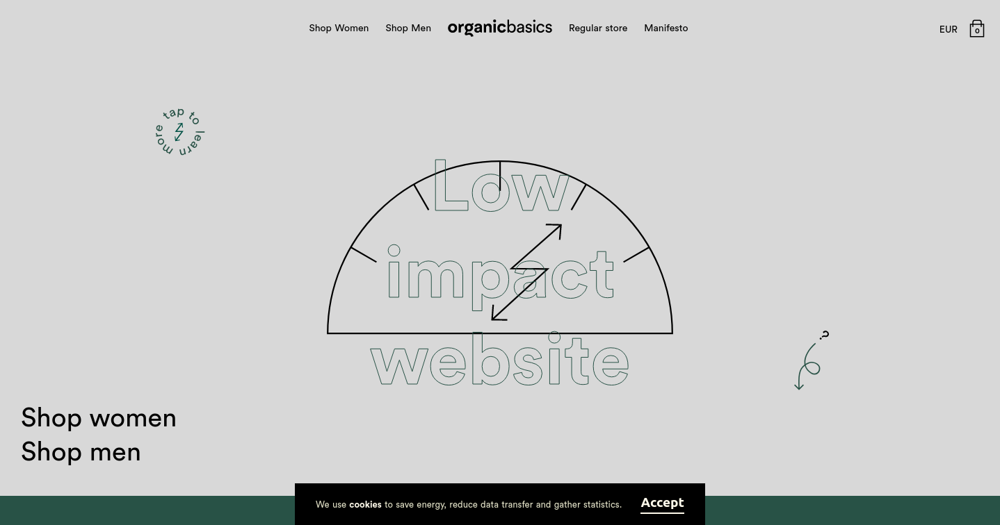
https://lowimpact.organicbasics.com : au moment de la rédaction de cet article, le site standard est en maintenance. Sur la version “low impact”, le choix de la sobriété est clairement affiché. L’accent est mis sur les formes simples (via du SVG) et les aplats de couleurs. En revanche, il est regrettable que cette version ne soit pas la version par défaut du site. Ceci nuit grandement à l’impact de cette démarche.
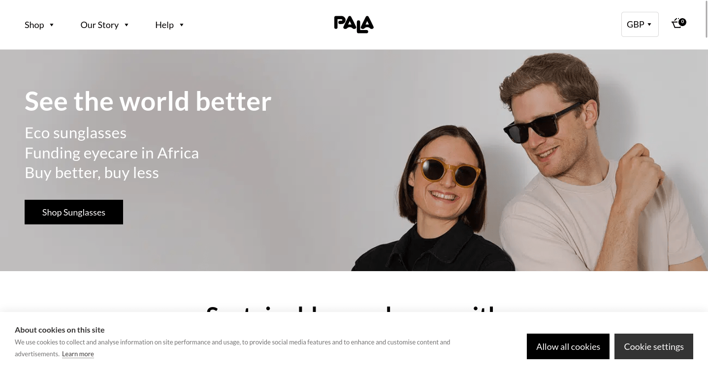
https://palaeyewear.com : la page d’accueil est plutôt légère et agréable. On y retrouve les éléments classiques pour un tel site : une vidéo (intégrée sobrement), quelques produits, les avis de consommateurs, quelques actualités, un rapport d’impact, etc. Plusieurs bonnes pratiques d’efficience ne sont pas respectées mais cette page s’en sort mieux que la plupart des autres sites de e-commerce. Tout se complique lorsqu’on accède à une fiche-produit. Ce sont ici plus de 100 requêtes et plusieurs Mo de données qui sont transférés. L’effort d’écoconception aurait donc dû être poussé plus loin, notamment en se basant sur un parcours utilisateur (navigation et achat d’un produit) plutôt que seulement sur la page d’accueil.
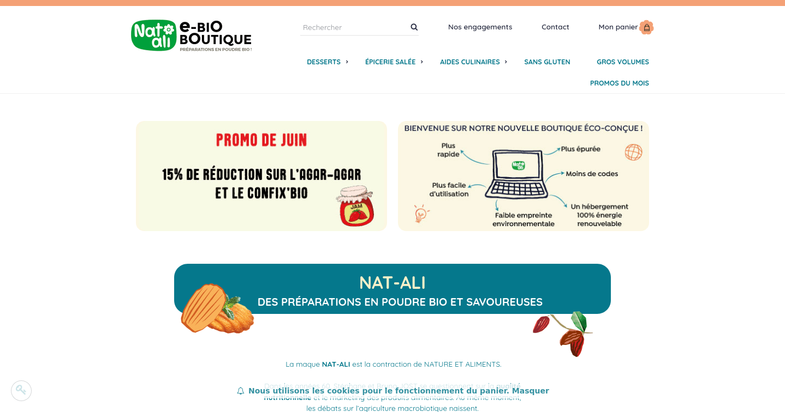
https://www.boutique-natali.com : on trouve sur cette page aussi plusieurs éléments propres à ce type de site (promotions en cours, éléments de réassurance, produits mis en avant, etc.) en plus de la mise en avant de la démarche d’écoconception mise en œuvre. La même sobriété se retrouve sur les fiches produit. Certes, certains types de produits vendus en ligne nécessitent probablement plus d’images (par exemple dans le domaine de la mode ou des cosmétiques) mais il s’agit à mon avis là d’une bonne base de réflexion pour concevoir une boutique en ligne légère et agréable d’utilisation.
Magazines et presse en ligne
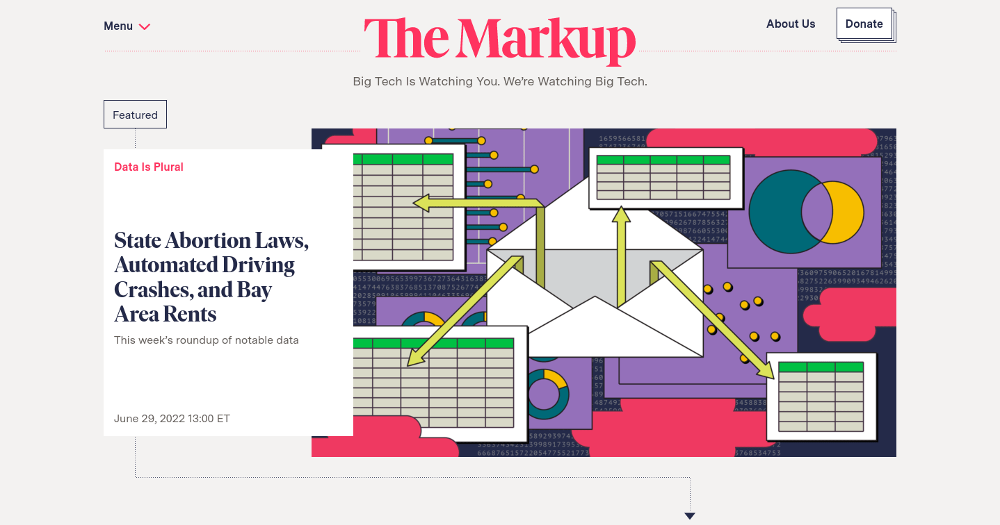
https://themarkup.org est un site sobre et élégant à la fois, ce qui est d’autant plus notable pour de la presse en ligne. Ces sites sont habituellement alourdis entre autres par la pub et les trackers, ce qui n’est pas le cas ici. Un site important à garder en tête, donc, comme exemple de site de presse en ligne écoconçu. Attention toutefois, la légèreté de ce site par rapport à d’autres sites similaires est en partie due à des choix de modèle économique. Une fois de plus, ceci met en évidence le rôle qu’ont à jouer tous les acteurs d’un projet sur le sujet de la sobriété numérique.
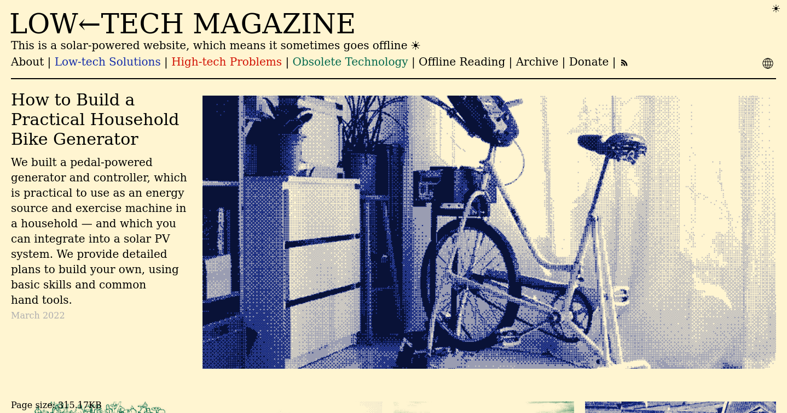
https://solar.lowtechmagazine.com : il s’agit probablement là de l’un des exemples les plus connus. Le choix radical de réduction d’impact environnemental est ici clairement affiché. Ceci ne fera pas forcément l’unanimité (notamment en raison du dithering).
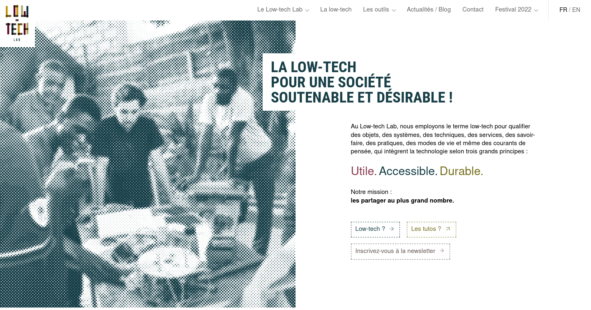
On retrouve une logique proche sur le site des Designers Ethiques (mise en page proche d’un jounal papier à l’ancienne pour un résultat des plus sobres) voire (pour la structure) sur celui de .Pikselkraft. Le site du Low-tech Lab, s’il en reprend certains éléments, va vers une page plus riche en contenu et avec une structure moins rigide. La page d’accueil semble alors plus attractive et le contenu plus facile à identifier.
Autres sites
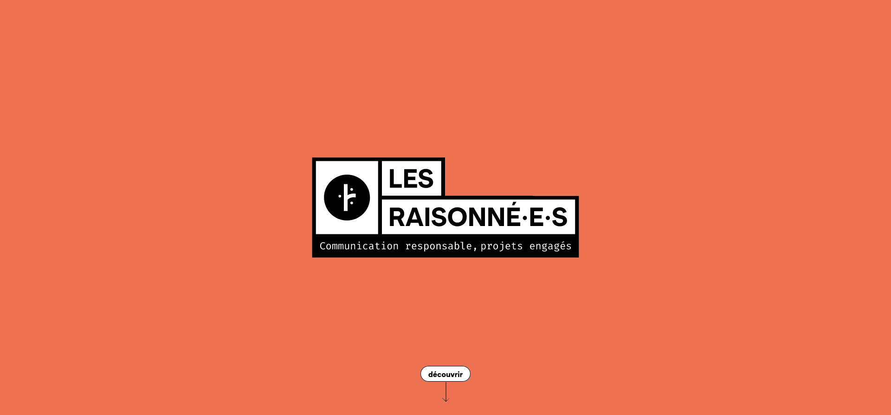
https://lesraisonnees.co : un site one-page basé sur le scroll. Un site d’agence au contenu classique mais réalisé de façon très sobre et efficiente, très clair. Un très bon exemple.
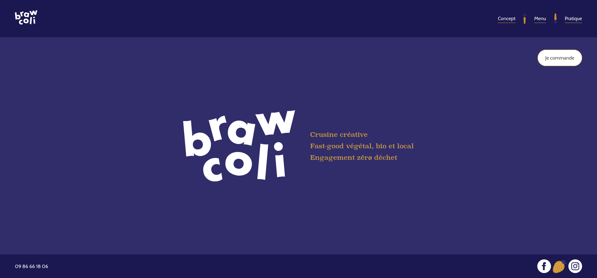
https://brawcoli.fr : les éléments classiques sont regroupés en une seule page qui met bien avant ce qui est proposé par ce restaurant.
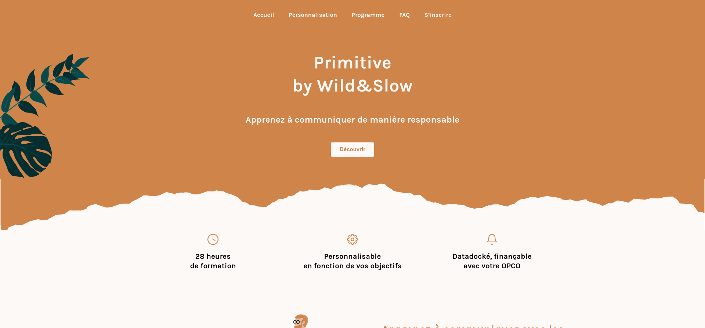
https://primitive.wildandslow.fr : on trouve dans la liste de nombreux sites d’agence ou d’indépendants spécialisés dans la réalisation de sites sobres (ce qui est logique voire rassurant). Sur chacun, l’idée est généralement de tout présenter en une seule page avec des aplats de couleurs et peu d’images (toutes optimisées). Primitive by Wild&Slow est assez représentatif tout en se démarquant entre autres par des zones aux contours non-linéaires. Dans d’autres cas, l’accent est mis sur les formes géométriques plutôt que sur des images plus complexes.
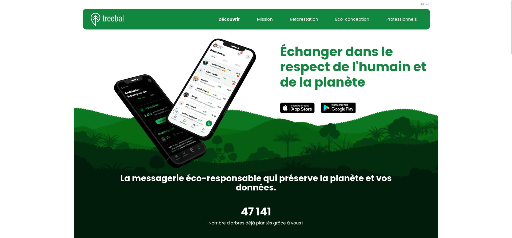
https://www.treebal.green est une variante beaucoup plus riche graphiquement et pour autant assez sobre.
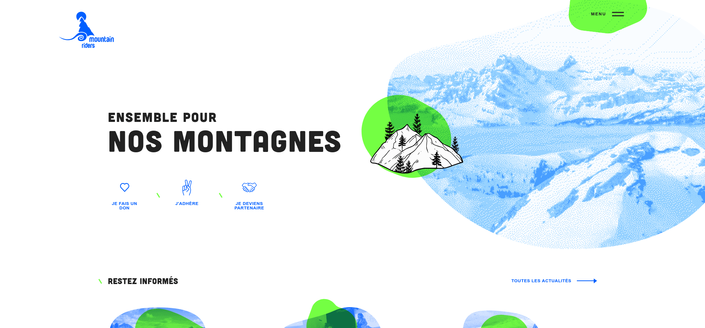
https://www.mountain-riders.org est un bel exemple d’utilisation des principes vus précédemment avec une charte graphique très contrastée pour un rendu au final propre et attractif.
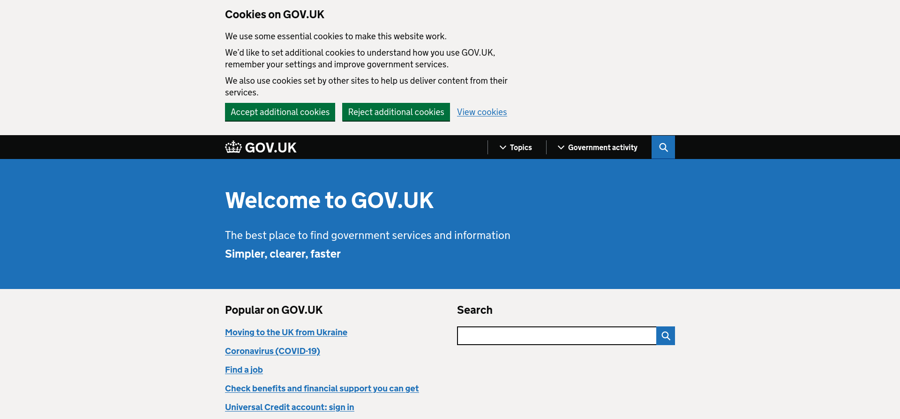
Même s’il peut sembler moins attractif que d’autres, https://www.gov.uk brille par sa légèreté et son accessibilité. De gros efforts ont ici été faits au niveau de l’architecture de l’information. Il est en tout cas intéressant d’avoir ici un exemple de service public accessible et sobre.
Même si les animations en continu et omniprésentes sont à éviter, certains sites légers les utilisent avec parcimonie :
Il convient dans tous les cas de garder en tête l’accessibilité ainsi que le fait que ce type d’ajout n’est que cosmétique. Pour certains sites comme https://dolo.biz/fr, l’attractivité de la page d’accueil repose énormément sur les animations mais le tout reste efficient et plutôt plaisant (même s’il ne sera pas forcément pratique pour tout le monde à la navigation, en particulier au clavier).
De façon totalement subjective, je retiens également https://zugvoegelfestival.org pour le choix des couleurs et la navigation dans la page d’accueil. Il est juste regrettable que les différents éléments de navigation dans le site ne soient pas disponibles (au moins au clic) dès l’arrivée sur le site.
Et une dernière mention spéciale pour https://sustainablewebdesign.org qui reprend des formes géométriques, des couleurs vives et met l’accent sur l’accessibilité tout en étant une mine d’informations sur l’écoconception web.
Conclusion
Le classement présenté ici devrait vous permettre d’avoir un meilleur aperçu de ce qu’il est possible de faire avec un site web sobre. Cette liste est appelée à s’enrichir au fil du temps et à servir d’inspiration pour ceux qui voudraient se lancer dans la création de sites sobres.
Si le ressenti que l’on peut avoir en utilisant un site est en partie subjectif, l’accessibilité doit être prise en compte et la notion de sobriété creusée autant que nécessaire.